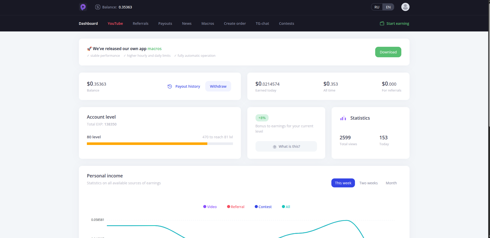
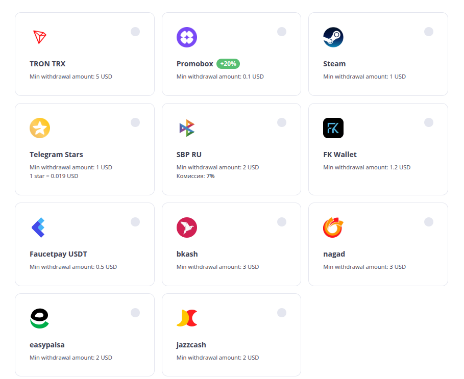

Disclosure
This article contains referral links. If you sign up through our links, we may earn a small commission at no extra cost to you. See our full disclaimer.
PayUp.video is a video ad platform that pays out via FaucetPay for watching 10-20 second ads. It is fully automatable with MacroDroid, has a very low withdrawal threshold, and a multi-level referral program. It pays slightly less than LuckyWatch overall, but that is exactly why it is worth running alongside it — or instead of it when LuckyWatch is having a slow day. Diversification is the point.
Why You Want a LuckyWatch Alternative
LuckyWatch is the top video earner in the stack for a reason. But any platform that runs on ad inventory has dry spells. Video supply fluctuates. Campaigns end. New ones take time to fill the gap. When LuckyWatch goes quiet, your automated earning drops to zero unless you have a fallback running.
PayUp.video fills that gap. It runs on the same principle — watch short video ads, earn crypto — but it operates on a different ad network and pays out via FaucetPay rather than the currencies LuckyWatch uses. Different network means different inventory cycles, which means when one slows down, the other often does not.
You are not replacing LuckyWatch. You are building redundancy into the stack.
Want the full review?
This post focuses on using PayUp.video alongside your existing setup. For a full breakdown of the platform, see the PayUp.video review.
Get Started
Sign up using our referral link and start watching videos immediately:
Sign Up for Free · Get PaidReferral link: payup.video/u/3170527
PayUp.video vs LuckyWatch: The Honest Comparison
Both platforms automate well with MacroDroid. Both pay crypto for watching videos. The differences are worth knowing:
| Feature | PayUp.video | LuckyWatch |
|---|---|---|
| Video Length | 10-20 seconds | Varies |
| Payout Method | FaucetPay | Multi-crypto |
| Daily Earnings (automated) | $0.10–$1.00 | $0.15–$1.50+ |
| Automation | MacroDroid (fully passive) | MacroDroid (fully passive) |
| Referral Program | Multi-level | Yes |
| Ad Network | Different from LuckyWatch | — |
PayUp pays a bit less on average. That is the honest answer. But when LuckyWatch inventory dries up and PayUp is still serving ads, the gap closes fast — and vice versa. The combination outperforms either one running alone.
Setting Up the MacroDroid Automation
The automation setup for PayUp.video follows the same pattern as LuckyWatch. If you already have a macro running for LuckyWatch, you are most of the way there — you are adding a second macro targeting a different app or browser tab, not starting from scratch.

Basic Macro Workflow
- Launch PayUp.video in a browser or WebView on the spare Android device
- Detect when a video loads and starts playing
- Wait for the video to finish (10-20 seconds)
- Detect the advance button and tap it
- Loop indefinitely; reload the page on error
Device Setup
Run this on a spare Android device plugged into power and connected to Wi-Fi. Do not use your primary phone. An old tablet or a secondary handset is ideal. The macro runs indefinitely with no input needed.
Getting Paid: FaucetPay Payouts
PayUp.video pays out via FaucetPay. The minimum withdrawal is very low, which means you do not need to accumulate for weeks before cashing out. FaucetPay is the standard micro-payment processor across the faucet and video-earning space — if you are already running other platforms in the stack, you almost certainly have an account already.

If you are not already on FaucetPay, setting up an account is free and takes a few minutes. Once connected, PayUp earnings flow directly into your FaucetPay balance alongside whatever other platforms you are running.
How to Stack It With LuckyWatch
The simplest approach: run both macros simultaneously on the same device if it handles the load, or dedicate one device per platform. The earnings from PayUp flow to your FaucetPay account while LuckyWatch earnings go wherever you have configured them. They do not interfere with each other.
Treat PayUp as the B-side of your video earning setup. LuckyWatch is primary. PayUp covers inventory gaps and adds a second revenue stream without adding any active work to your day. Once both macros are running, the combined output is higher than either alone — and more resilient to one platform having a slow week.